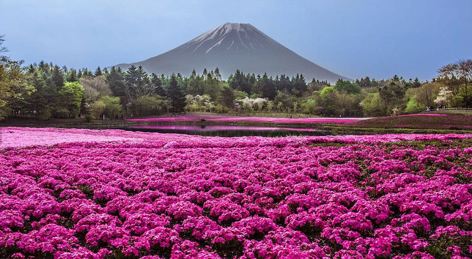

Hitachi Seaside Park

Hitachi Seaside Park (Taman Tepi Laut Hitachi Nasional)adalah taman luas dekat Mito di Prefektur Ibaraki yang menampilkan berbagai ruang hijau dan bunga musiman yang tersebar di lahan seluas 350 hektar, serta taman hiburan dan beberapa jalur bersepeda dan berjalan kaki.
Taman ini sangat terkenal dengan mekarnya musim semi, ketika jutaan tulip, daffodil, dan bunga lainnya mengubah lanskap menjadi lautan warna. Di musim panas, taman ini menjadi rumah bagi berbagai bunga liar dan rerumputan, termasuk semak kochia yang ikonik, yang berubah warna menjadi merah cemerlang di musim gugur.